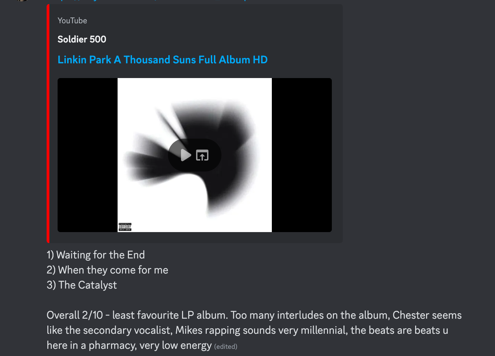

/** * Project #1: Music Journal * - My first website, built during the summer of 2024 * - Designed to help users log and review their favorite albums * - Built using Java for backend, with CSS and HTML for the frontend * - Integrated MongoDB to manage user profiles and album reviews * - Features include account creation, album ratings, review tracking, friend requests */ function MusicJournal() {
I love music and believe that to truly appreciate an artist or album, you need to listen to the entire album rather than just individual songs. Previously, I used my personal Discord to share my thoughts, embedding links to albums, picking my top three songs from each album, giving an overall score out of 10, and writing a short description explaining my rating. However, it became challenging to keep track of the albums I had already listened to and reviewed. To solve this, I decided to create a website called "Music Journal" where I can store and organize my album reviews more effectively.
Music Journal allows users to create accounts, log their favorite albums, and write detailed reviews. Each review includes a rating, top three favorite songs, and an optional description. The app was built using Java for the backend, CSS and HTML for the frontend, and MongoDB for storing user data and album reviews. The app lets the user search up any album using the MusicBrainzAPI and the Cover Art Archive API. The app also includes a friend request feature, though viewing friends' rated albums has yet to be implemented. I wanted the website to evoke the nostalgic feel of the golden age of websites (2006–2008). Rather than adopting a sleek, modern design like Spotify, I opted for a raw, HTML-heavy aesthetic reminiscent of early web designs. To enhance this vibe, I created most of the visuals myself, infusing the site with a grungy, early-2000s look.
Check out the source on GitHub.
}/** * Project #2: Event Lottery System App * - Completed in Fall 2024 as part of a group project for CMPUT 301 (team of 6). * - Developed to improve accessibility and fairness in event sign-ups at community centers. * - Features include lottery-based participant selection, real-time updates, and QR code scanning. * - Built with Firebase integration, Android SDK, and team-based software engineering practices. * - Result: Received an A-grade. */ function EventLotterySystemApp() {
This project, completed in Fall 2024, is an Android application designed to make event registration at community centers more accessible and equitable. The app uses a lottery-based system to allow participants to join waiting lists for popular events, removing the time pressure often associated with first-come, first-serve registrations. It was developed by a team of six, all practicing software engineering principles, and features a pooling system for fair participant selection, QR code scanning for event details, Firebase integration for real-time updates, multi-user roles, and optional geolocation verification. With an A-grade evaluation. The class introduced me to UML and the processes involved in developing an app while collaborating effectively in a team.
Check out the source on GitHub.
Check out the project outline on CMPUT301.
}/** * Project #3: Terminal-Based Twitter * - Created a mock Twitter application in the terminal using SQL and MongoDB. * - Focused on database design and query optimization. * - Built as two separate versions: one using SQL and another as an improved clone with MongoDB. */ function TerminalTwitter() {
This project involved creating a mock Twitter application that ran entirely in the terminal. The first version was built using SQL, focusing on relational database design and efficient queries. The second version improved upon the first by switching to MongoDB, incorporating non-relational database concepts for scalability and flexibility. Both projects strengthened my understanding of database management and query optimization.
Check out the SQL version on GitHub.
Check out the MongoDB version on GitHub.
}/** * Navigation */ function SiteNavigation() { Home(); Resume(); Education(); Contact(); }